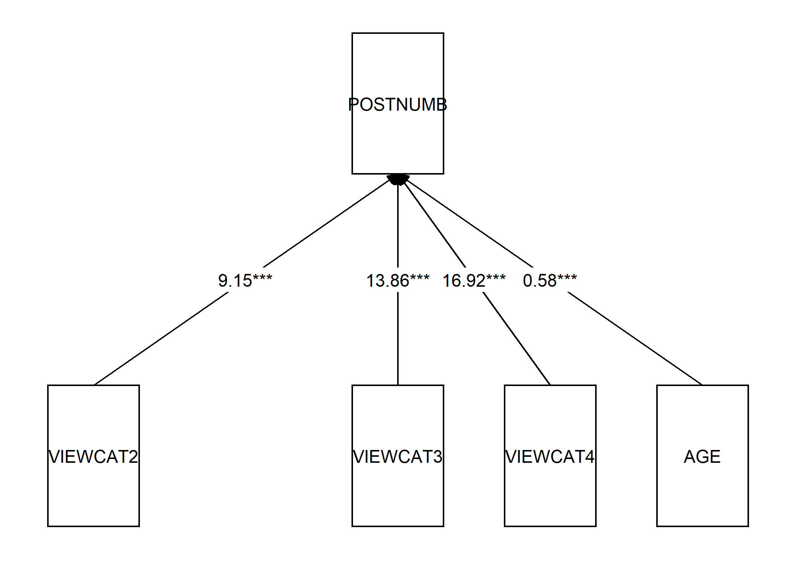
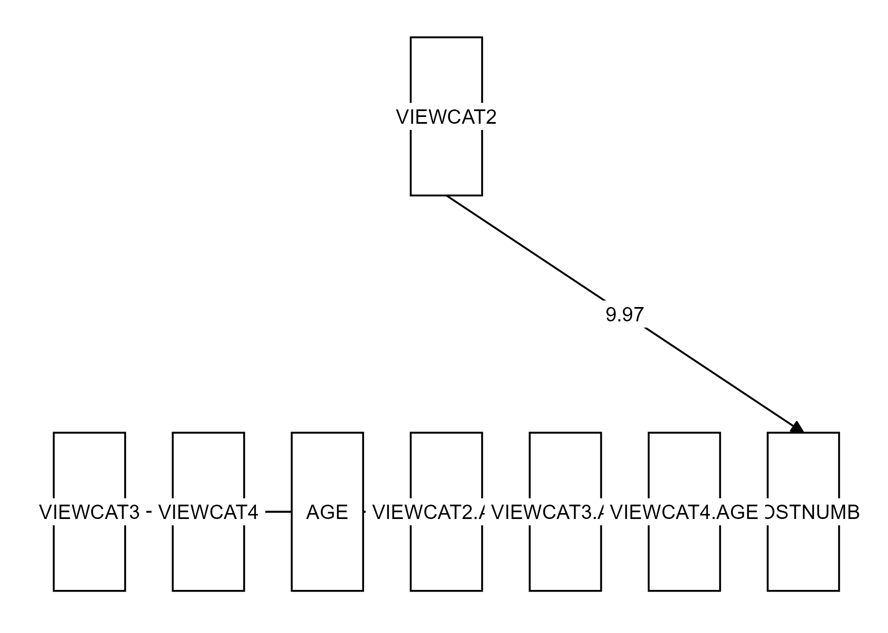

6.4 Section 3
Open the file Sesam2.sav.
# Load the data and put them in the object called "data"
data <- read.spss("Sesam2.sav", to.data.frame = TRUE)Use postnumb as the dependent variable in all the following analyses.
6.4.1 Question 3.a
Viewcat is a factor variable, but is not coded as such in the data. Turn it into a factor. Afterwards, make sure that viewcat=1 is the reference group in the contrasts, i.e., the group that is identified by zero scores on all the associated dummy variables.
Hint: Use <- factor() and contrasts().
Click for explanation
data$VIEWCAT <- factor(data$VIEWCAT)
contrasts(data$VIEWCAT)## 2 3 4
## 1 0 0 0
## 2 1 0 0
## 3 0 1 0
## 4 0 0 16.4.2 Question 3.b
Perform a multiple regression analysis with just the viewcat dummies as predictors.
Click for explanation
results <- lm(POSTNUMB ~ VIEWCAT, data)
summary(results)##
## Call:
## lm(formula = POSTNUMB ~ VIEWCAT, data = data)
##
## Residuals:
## Min 1Q Median 3Q Max
## -25.474 -7.942 0.240 8.526 25.240
##
## Coefficients:
## Estimate Std. Error t value Pr(>|t|)
## (Intercept) 18.760 2.316 8.102 8.95e-14 ***
## VIEWCAT2 9.331 2.900 3.218 0.00154 **
## VIEWCAT3 14.714 2.777 5.298 3.49e-07 ***
## VIEWCAT4 18.032 2.809 6.419 1.24e-09 ***
## ---
## Signif. codes: 0 '***' 0.001 '**' 0.01 '*' 0.05 '.' 0.1 ' ' 1
##
## Residual standard error: 11.58 on 175 degrees of freedom
## Multiple R-squared: 0.2102, Adjusted R-squared: 0.1967
## F-statistic: 15.53 on 3 and 175 DF, p-value: 5.337e-096.4.3 Question 3.c
What do the regression coefficients represent? How can you determine the average postnumb score for each of the viewcat categories, based on the regression parameters?
6.4.4 Question 3.d
Make a coloured scatter plot with age on the x-axis and postnumb on the y-axis. Colour the dots according to the their viewcat category. How do you interpret the differences in slopes of these four fit lines?
Hint: Use ggplot() and geom_point(); use the argument aes(colour = ‘…’) to map colour to a certain variable. A new command is geom_smooth() : This plots a smooth line (like a regression line).
Click for explanation
We will use ggplot again:
ggplot(data, aes(x = AGE, y = POSTNUMB, colour = VIEWCAT)) +
geom_point() + # For scatterplot
geom_smooth(method = "lm", se = FALSE) + # For regression lines
theme_bw() # For a pretty theme
6.4.5 Question 3.e
Add an interaction between age and viewcat to the regression analysis.
Hint: An interaction is created by multiplying two variables. You can multiply with * in the formula of lm().
Click for explanation
results_interaction <- lm(POSTNUMB ~ VIEWCAT*AGE, data)
summary(results_interaction)##
## Call:
## lm(formula = POSTNUMB ~ VIEWCAT * AGE, data = data)
##
## Residuals:
## Min 1Q Median 3Q Max
## -23.8371 -8.2387 0.6158 8.7988 22.5611
##
## Coefficients:
## Estimate Std. Error t value Pr(>|t|)
## (Intercept) -18.7211 15.5883 -1.201 0.2314
## VIEWCAT2 9.9741 20.6227 0.484 0.6293
## VIEWCAT3 23.5825 19.3591 1.218 0.2248
## VIEWCAT4 34.3969 19.3600 1.777 0.0774 .
## AGE 0.7466 0.3074 2.429 0.0162 *
## VIEWCAT2:AGE -0.0175 0.4060 -0.043 0.9657
## VIEWCAT3:AGE -0.1930 0.3782 -0.510 0.6104
## VIEWCAT4:AGE -0.3416 0.3770 -0.906 0.3663
## ---
## Signif. codes: 0 '***' 0.001 '**' 0.01 '*' 0.05 '.' 0.1 ' ' 1
##
## Residual standard error: 10.99 on 171 degrees of freedom
## Multiple R-squared: 0.3046, Adjusted R-squared: 0.2762
## F-statistic: 10.7 on 7 and 171 DF, p-value: 3.79e-116.4.6 Question 3.f
Perform a sequential multiple regression. Include age and viewcat as the predictors in the first analysis. Add the interaction term in the second analysis. Make sure to obtain information about the change in R-square!
Hint: Use anova() to compare two regression models.
Click for explanation
results_main <- lm(POSTNUMB ~ VIEWCAT + AGE, data)
anova(results_main, results_interaction)6.4.7 Question 3.g
Sketch path models of both steps of the regression analysis (on paper).
Click for explanation
Step 1:

Step 2:

6.4.8 Question 3.h
Write down the regression equations of both steps of the sequential analysis.
Click for explanation
\(Postnumb_i = b_0 + b_1D_{view2i} + b_2D_{view3i} + b_3D_{view4i} + b_4Age_i + \epsilon_i\)
\[ \begin{aligned} Postnumb_i = b_0 + &b_1D_{view2i} + b_2D_{view3i} + b_3D_{view4i} + b_4Age_i +\\ &b_5D_{view2i}Age_i + b_6D_{view3i}Age_i + b_7D_{view4i}Age_i + \epsilon_i \end{aligned} \]
6.4.9 Question 3.i
Write down the null hypothesis that is tested to determine whether there is an interaction between age and viewcat.
Click for explanation
\(H_0: b_5 = b_6 = b_7 = 0\)
6.4.10 Question 3.j
Indicate for each parameter in the second regression model what it means. Also write down the regression equation for each of the four categories of viewcat separately.
Click for explanation
| Parameter | Meaning |
|---|---|
| b_0 | Intercept; the predicted value of postnumb for someone of age 0 in viewcat 1 |
| b_1 | Slope of the dummy for viewcat 2; difference in the predicted value of postnumb for someone aged 0 in category 2, compared to category 1 |
| b_4 | The effect of age for someone in viewcat 1 |
| b_5 | Difference in the effect of age for someone in viewcat 2, compared to viewcat 1 |
| b_7 | Difference in the effect of age for someone in viewcat 4, compared to viewcat 1 |
For viewcat 1:
\(Postnumb_i = b_0 + b_4Age_i + \epsilon_i\)
For viewcat 2:
\(Postnumb_i = b_0 + b_4Age_i + b_1D_{view2i} + b_4Age_i + b_5D_{view2i}Age_i + \epsilon_i\)
Etc.
6.4.11 Question 3.k
What do you conclude about the interaction between age and viewcat?
6.4.12 Question 3.l
Note that you can also look at this problem as an ANCOVA. What are the research question and null hypothesis in this case?
Click for explanation
RQ: Is there a significant difference between the marginal means of postnumb by viewcat, after controlling for age?
\(H_0:\) After controling for age, the mans of postnumb are equal in all groups.
6.4.13 Question 3.m
Perform this analysis as an ANCOVA.
Hint: Add-1 to a formula to drop the intercept.
Click for explanation
To drop the intercept from the analysis, and estimate the marginal means for all viewcat categories, we can add -1 (minus the intercept) to the formula:
results_ancov <- aov(POSTNUMB~AGE+VIEWCAT-1, data)Examine the parameter estimates of the ANCOVA. What do the parameter estimates represent?
Click for explanation
We use summary.lm() again to obtain the parameter estimates:
summary.lm(results_ancov)##
## Call:
## aov(formula = POSTNUMB ~ AGE + VIEWCAT - 1, data = data)
##
## Residuals:
## Min 1Q Median 3Q Max
## -23.680 -8.003 -0.070 8.464 22.635
##
## Coefficients:
## Estimate Std. Error t value Pr(>|t|)
## AGE 0.5750 0.1221 4.708 5.08e-06 ***
## VIEWCAT1 -10.1056 6.5091 -1.553 0.122
## VIEWCAT2 -0.9603 6.3865 -0.150 0.881
## VIEWCAT3 3.7546 6.4760 0.580 0.563
## VIEWCAT4 6.8159 6.5414 1.042 0.299
## ---
## Signif. codes: 0 '***' 0.001 '**' 0.01 '*' 0.05 '.' 0.1 ' ' 1
##
## Residual standard error: 10.94 on 174 degrees of freedom
## Multiple R-squared: 0.8973, Adjusted R-squared: 0.8943
## F-statistic: 304 on 5 and 174 DF, p-value: < 2.2e-16The parameter estimates are the means of each VIEWCAT category when age = 0.